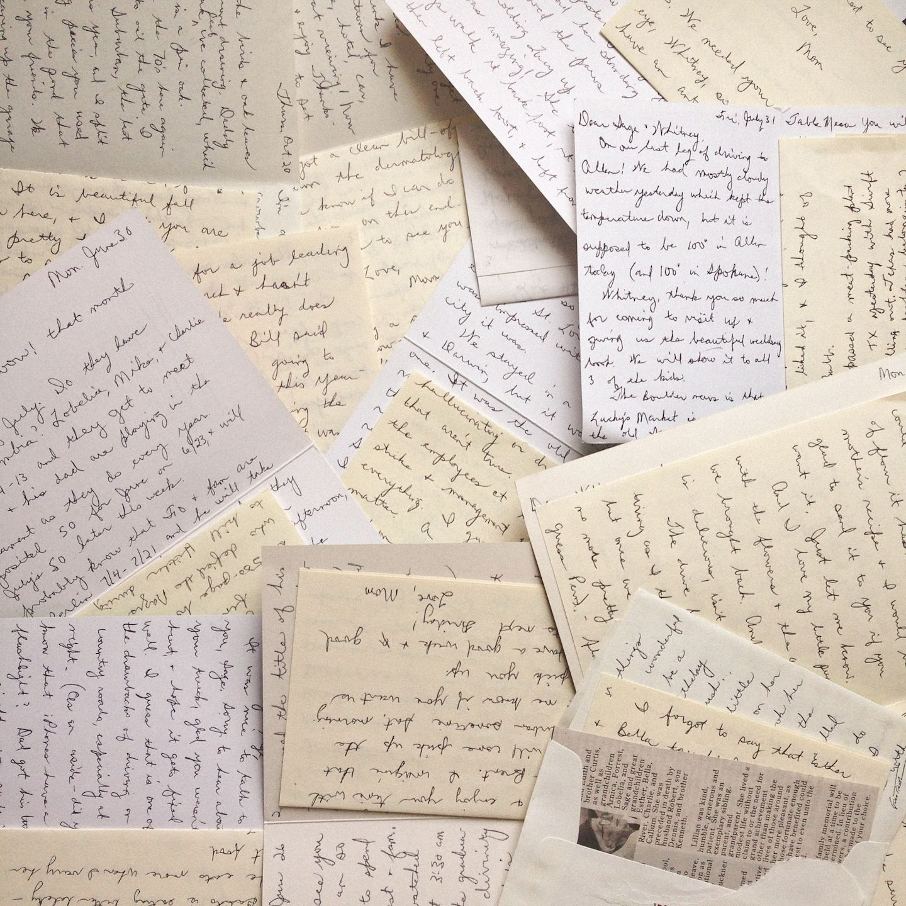
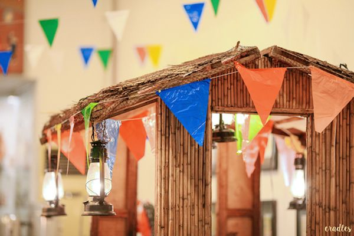

<html>
    <head>
        <title>NOLI ME TANGERE: KABANATA 28</title>
    </head>
</html>

<style>
    body {
        background-color: #b8936b;
    }

    h2{
        background-color: #d7bfae;
    }

    p {
        background-color: #d3bfa6;
    }

    body {
    margin: 0;
    padding: 0;
    display: flex;
    justify-content: center;
    align-items: center;
    min-height: 100vh;
    font-family: "Lucida Console", "Courier New", monospace;
}
.container {
    width: 1200px;
    height: auto;
    margin:auto;
    display: grid;
    background-color: #fff;
    grid-template-columns: repeat(auto-fit, minmax(280 px, 1 px));
}
.container .box {
    position:relative;
    padding: 20px 40px 40px;
    overflow: hidden;
}
</style>

<body>
    <h1>Kabanata 28: Ilang Sulat</h1>
</body>

<div class = "container">
    <div class = "box">
        <h2>BUOD</h2>
        
        <p>Pagkatapos magaanap ang pagdiriwang ng bisperas 
        ng  kapistahan sa bayan ng San Diego ay naibalita ito sa 
        Maynila sa pamamagitan ng mga liham. Ang pagdiriwang ay
        inilarawan bilang makulay at marangya sapagkat pinangungunahan
        ito ng mga kilalang tao na s'yang dahilan kung bakit ito 
        dinarayo. Mayroon ding palatuntunan at musiko.  </p>
    
        <p>Ayon sa isang liham, tahanan ni Kapitan Tiyago ang 
        naging sentro ng kapistahan sa kadahilanang mga prayle at mga 
        kilalang Kastila ang kanyang mga panauhin. Pinuri din ang husay 
        ni Maria Clara sa piyano sa harap ng mga sikat na artista galing 
        Espanya. Nagkaroon din ng komedya na tanging mga Kastila lamang 
        ang nasiyahan sapagkat idinaos ito sa wikang Kastila. Ngunit nang 
        komedyang Tagalog na ang idinaraos ay nasiyahan ang mga Pilipino. 
        Nabanggit din sa liham ang pagkakaroon ng sakit ni Ibarra na 
        s'yang naging dahilan ng hindi nito pagdalo.</p>
    </div>
    
    <div class = "box">
        <h2>REPLEKSYON</h2>
        
        <p>Ang kapistahan ng mga bayan sa Pilipinas ay isa sa mga
        mahahalagang pagdiriwang para sa mga Pilipino mula noong
        hanggang ngayon. Ito ay sa kadahilanang sinasalamin nito
        ang makulay na kultura ng ating bansa. Kung kaya't hindi
        nakakapagtaka na ito'y talagang pinaghahandaan at nagiging
        usap-usapan. </p>
    </div>

    <div class = "box">
        <h2>PAGLALARAWAN NG ISANG KARAKTER </h2>
        
        <h3>María Clara de los Santos y Alba </h3>
        <p>Si María Clara de los Santos y Alba o mas kilala bilang si Maria Clara 
        ay isa sa mga pangunahing karakter ng nobela ni Dr. Jose Rizal na Noli Me 
        Tangere. Siya ang kababata at iniirog ni Juan Crisostomo Ibarra, ang protaginista 
        ng mga nobela ni Rizal. Sina Doña Pia Alba at Kapitan Tiago ang kinilala n'yang
        mga magulang. Ngunit si Padre Damaso ang tunay n'yang Ama. Siya ay merong mga katangiang 
        mahinhin, maganda, masunurin, mapagmahal at iba pang moralidad na bumubuo sa 
        kalinisang-puri ng mga babae. Inilarawan din siya ni Rizal bilang isang mestiza, 
        napakaputi, bilog ang mga mata at may perpektong ilong. Dahil dito, siya ang naging 
        pamantayan ng kagandahan sa Pilipinas.  </p>
    </div>
</div>
